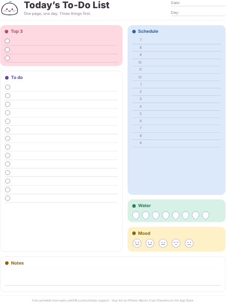
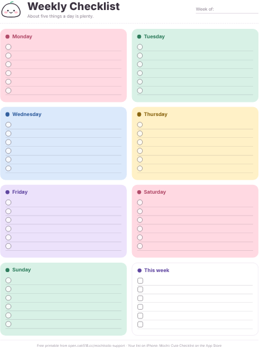
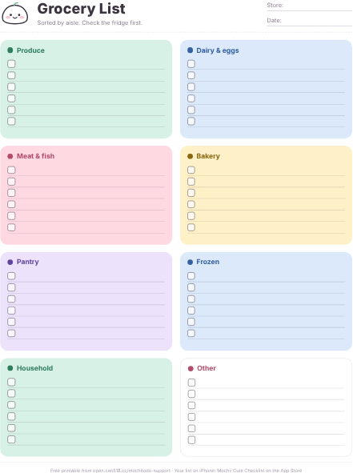
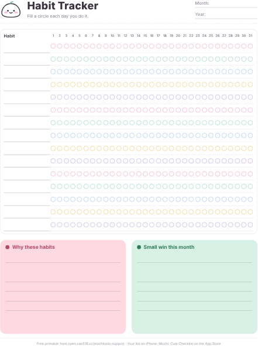
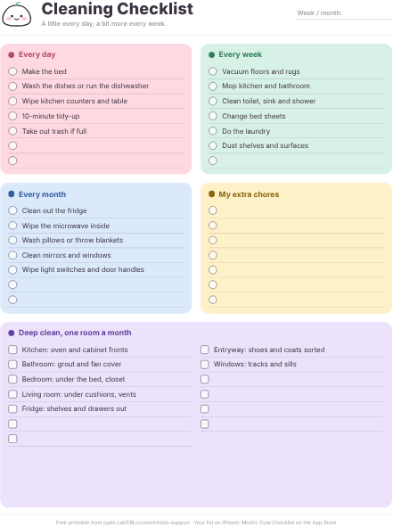

Free Printable Cute To-Do List & Checklist Templates
Five free printable templates with soft pastel colors and round checkboxes: a daily to-do list, a weekly checklist, a grocery list, a monthly habit tracker and a cleaning checklist. Print any of them straight from this page, or download a PDF for A4 or US Letter. No sign-up, no email.
On this page
The 5 templates
Each card has a preview, a Print button that prints only that template, and PDF downloads. The drawings are made for this page; you can print as many copies as you like for yourself, your family or your classroom.

1. Daily to-do list
A “Top 3” box for what matters most, 14 more checkbox lines, an hourly schedule from 7 am to 9 pm, a water tracker, a mood row and space for notes.
Prefer it on your phone? Mochi on the App Store · Google Play

2. Weekly checklist
Monday to Sunday, each with its own checkbox lines, plus a “This week” box for goals and things that do not belong to one day.
Prefer it on your phone? Mochi on the App Store · Google Play

3. Grocery list
Sorted by store section (produce, dairy & eggs, meat & fish, bakery, pantry, frozen, household, other) so you walk the store once.
Prefer it on your phone? Mochi on the App Store · Google Play

4. Monthly habit tracker
Up to 15 habits, one row each, with a circle for every day from 1 to 31. Fill in a circle on each day you did the habit.
Prefer it on your phone? Mochi on the App Store · Google Play

5. Cleaning checklist
Daily, weekly and monthly cleaning tasks already filled in, a room-by-room deep clean section and blank lines for your own chores.
Prefer it on your phone? Mochi on the App Store · Google Play
Want all five at once? Use your browser’s own print command (Ctrl+P on Windows, Cmd+P on Mac) on this page and it prints the five templates, one per page, without the rest of the article.
How to print
- Pick the PDF for your paper. A4 is the usual size in the UK, Europe, Australia and most of Asia; US Letter is the usual size in the US and Canada. The Print buttons work for both.
- Keep the scale at 100% (“Actual size” in some PDF viewers). Do not choose “Fit to page” if the lines look too small.
- Leave margins on “Default.” Each template already leaves a 10 mm border so nothing is cut off.
- Turn off “Headers and footers” in the print dialog if you do not want the date and web address printed at the edges.
- Color or ink saving: turn on “Background graphics” for the pastel boxes, or turn it off to print only the lines and checkboxes.
Tip: print the weekly checklist and the habit tracker on slightly thicker paper (around 100–120 gsm or 28–32 lb) if they will stay on the fridge for a whole week or month.
How to use them
Daily to-do list
Fill it in the evening before or first thing in the morning. Put only three tasks in the Top 3 box; anything else goes on the lines below. Block time for the Top 3 in the schedule column, then check off the rest if there is time left.
Weekly checklist
Write fixed things first (appointments, school events, bills), then spread the rest across the week. Keep each day to about five items. If a task slips, move it to the next day instead of crossing it out.
Grocery list
Keep it on the fridge and add items as they run out. Before you shop, look in the pantry and fridge and add what is missing. In the store, follow the sections in order.
Habit tracker
Start with three to five small habits (“drink 6 glasses of water,” “read 10 pages,” “stretch 5 minutes”). Fill in the circle when the habit is done. A missed day is fine; try not to miss two in a row.
Cleaning checklist
The daily part takes about 15 minutes. Spread the weekly tasks over the week (for example, bathroom on Monday, floors on Thursday). Pick one room from the deep clean section each month.
Frequently asked questions
Are these to-do list printables really free?
Yes. You can print or download all five templates for personal use. There is no sign-up and no email address needed.
Will the templates fit A4 and US Letter paper?
Yes. Each template has its own PDF for A4 and for US Letter, and the browser print button uses an area that fits on both paper sizes.
Can I print in black and white?
Yes. The colors are light pastel backgrounds, so the lines and checkboxes stay clear on a black-and-white printer. Turn off background graphics if you want to save ink.
Can I fill in the templates on a tablet?
Yes. Open the PDF in an app that lets you write on PDFs and use it as a digital planner page.
Want the same list on your phone?
Paper is great on the fridge, but it stays at home. Mochi: Cute Checklist is the to-do list app we make. According to its App Store listing, it lets you:
- give every task its own little emoji and tap the circle when it is done;
- set reminders, and plan your day with a daily planner and agenda;
- keep grocery lists, notes, habits and daily routines in one place;
- keep your list on a Home Screen widget and Apple Watch;
- switch between 101 themes.
Honest note about the free version: according to the App Store listing, Mochi’s free version includes 2 lists with up to 4 tasks each, 5 themes and 1 emoji set. That fits a daily “Top 3” and a short grocery run. Premium, an in-app purchase, unlocks unlimited lists and tasks, all 101 themes and all 11 emoji sets. The printables on this page are free either way.
Take your Top 3 with you. Make a “Today” list in Mochi and put the widget on your Home Screen.
View Mochi: Cute Checklist on the App Store
On Android?
View Mochi: Cute Checklist on Google Play
Already using Mochi: Cute Checklist? You can rate or review it on the App Store. Write a review
Related guides
- Year-End Checklist 2026: Wrap Up the Year Before January
- December To-Do List 2026: A Week-by-Week Holiday Checklist
- Winter Break Chore Chart for Kids: A List You Can Copy
- To-do list widget on iPhone: set up Mochi on your Home Screen
- Mochi free vs Premium: is the free version enough, and when is Premium worth it?
Written by the developer of Mochi: Cute Checklist with AI assistance. The templates and drawings were made for this page; the app features listed above are checked against the app’s App Store listing. The printables are paper templates and are not part of the app. Last updated: 2026-11-19.